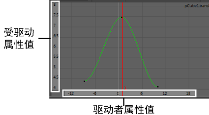

设置受驱动关键帧时，在“曲线图编辑器”(Graph Editor)中创建的曲线表示链接属性之间的关系。
对于常规动画关键帧，
“曲线图编辑器”(Graph Editor)中的垂直轴显示属性值，水平轴显示动画时间值。对于受驱动关键帧，垂直轴列出的是受驱动属性值，而水平轴列出的是驱动者属性值。

对于驱动者的每个属性值，曲线都将显示受驱动属性的相关值。可以编辑曲线以改变关系。
要在“曲线图编辑器”(Graph Editor)中查看受驱动关键帧关系，请执行以下操作：
- 选择受驱动对象。
- 从主菜单选择“窗口 > 动画编辑器 > 曲线图编辑器”(Window > Animation Editors > Graph Editor)。
- 在“曲线图编辑器”(Graph Editor)中，选择“视图 > 框显 > 框显全部”(View > Frame > Frame All)。
“曲线图编辑器”(Graph Editor)中的曲线显示受驱动对象和驱动者对象值之间的关系。左侧数字列列出了受驱动属性值，而底行列出了驱动者属性值。
- （可选）在“曲线图编辑器”(Graph Editor)中编辑曲线形状，以调整链接对象的行为。